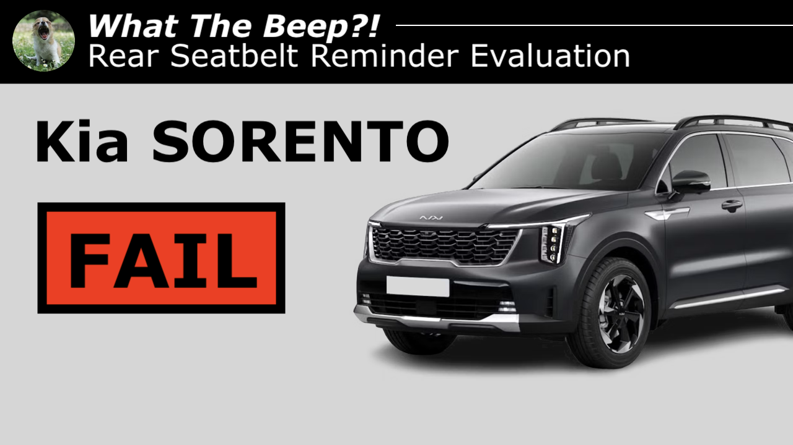

The Yawning Chihuahua
Home | Articles | #WhatTheBeep | Twitter | Instagram | YouTube

Kia SORENTO (India) |
|||
|---|---|---|---|
| Behaviour of second-level warning in the 2nd-row outboard seats | |||
| Testcase | Description | Audible warning | Verdict |
 |
occupant does not fasten seatbelt | NO | NOT OK |
 |
occupant takes off seatbelt | YES | OK |
 |
seatbelt not fastened on an empty seat | NO | OK |
 |
seatbelt taken off on an empty seat | YES | NOT OK |
| FAIL | |||
Kia SORENTO (Australia) |
||
|---|---|---|
| Behaviour of second-level warning in the 2nd-row outboard seats | ||
| Testcase | Description | Audible warning |
|
occupant does not fasten seatbelt | YES |
|
occupant takes off seatbelt | YES |
|
seatbelt not fastened on an empty seat | NO |
|
seatbelt taken off on an empty seat | NO |